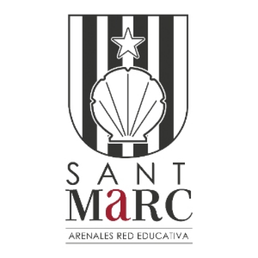

Studies
Post-compulsory education
Institute: Jesuitas Bellvitge - Center for Studies Joan XXIII
Course: FP Medium Grade - SMX (Microcomputer Systems and Networks)
Year: 2023 - 2025
Location of the Institute

Post-compulsory education
Institute: Sant Marc School of Sarrià
Course: Baccalaureate in Visual Arts (First year)
Years: 2022 - 2023
Location of the Institute
Compulsory Secondary Education
Institute: Sant Marc School of Sarrià
Course: ESO
Years: 2018 - 2022
Location of the Institute
Languages
Spanish: Native
Catalan: Native
English: B2 (High Intermediate)